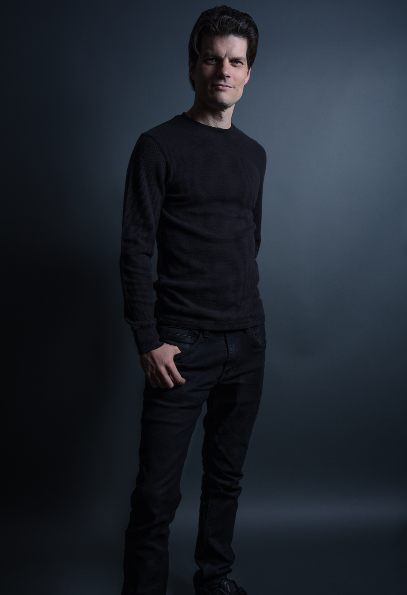
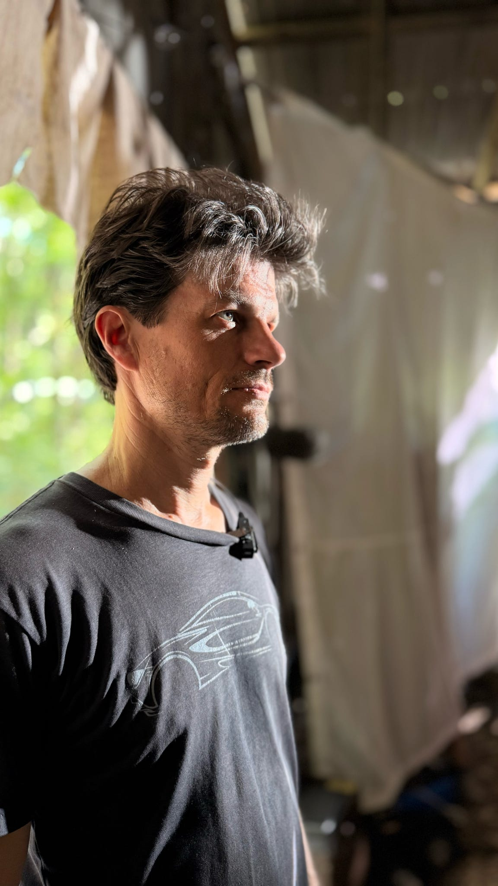
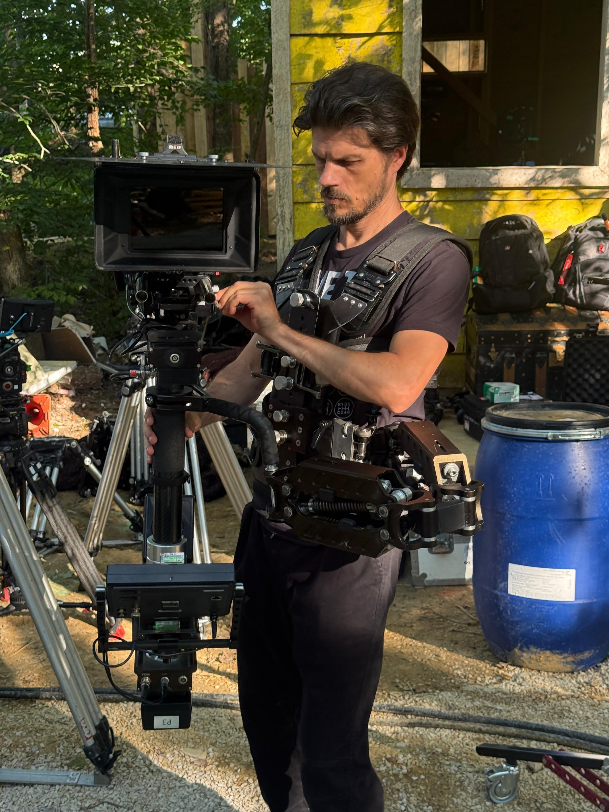

Camera Systems
The rig supports fully built ARRI Alexa Mini and RED DSMC2 cameras, with a maximum camera payload of 35 lb (16 kg).

02 / About


Philip Johnson is a Steadicam and camera operator based in Los Angeles. He started in 2010, learning the craft on set across music videos, commercials, live events, and feature films.
He most recently wrapped Twilight of the Dead (Kate Beckinsale, Betty Gabriel), the final chapter of George A. Romero's zombie saga, as A-camera and Steadicam operator.
He has operated on multiple features for cinematographer Adam Biddle, including The Minute You Wake Up Dead (Morgan Freeman, Cole Hauser).
Other credits include Breach (Bruce Willis, Thomas Jane), Alone We Fight (Corbin Bernsen, Johnny Messner), and Kaitlyn's Chance (Samantha Rose Baldwin, Sean Patrick Flanery).
Credited on IMDb as Philip Nathanael.
View IMDb Profile ↗01 / Selected Work
03 / Equipment
The rig supports fully built ARRI Alexa Mini and RED DSMC2 cameras, with a maximum camera payload of 35 lb (16 kg).
Modified Proline Raven sled with onboard monitor, Raven arm with upgraded springs, and standard vest.
Complete support package includes docking stand, batteries, chargers, power and video cables, hard cases, and accessories.


04 / Contact
For production bookings, professional inquiries, and collaborations.
Get in Touch